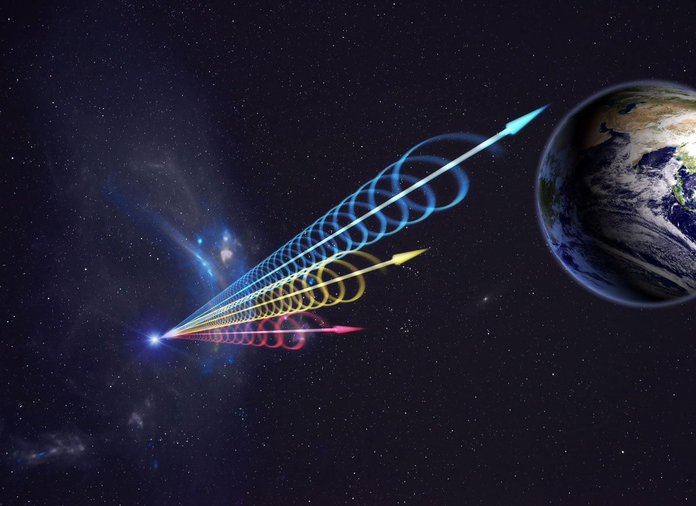
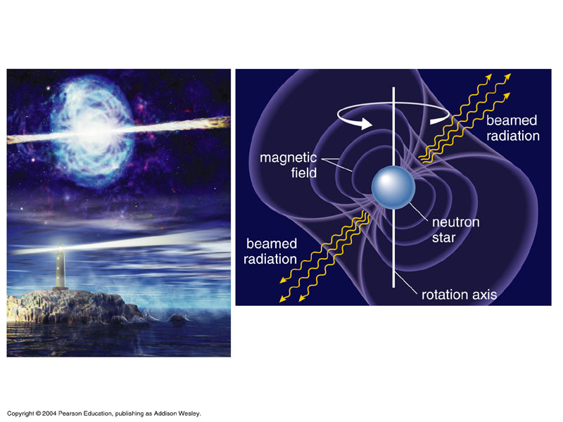
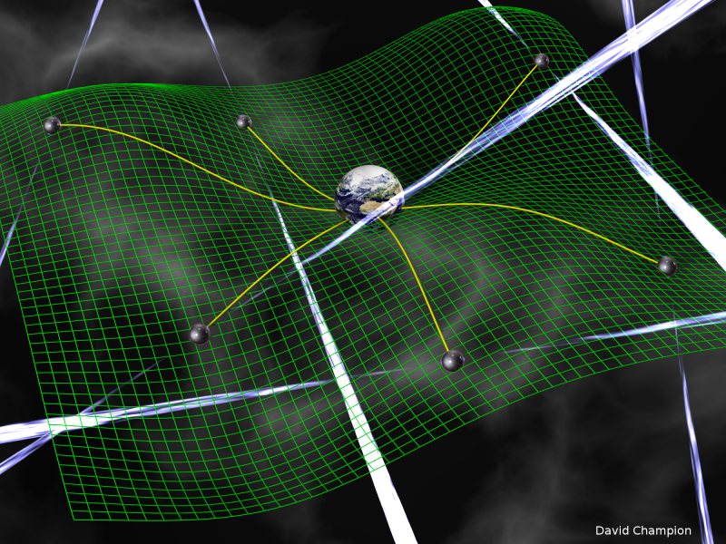
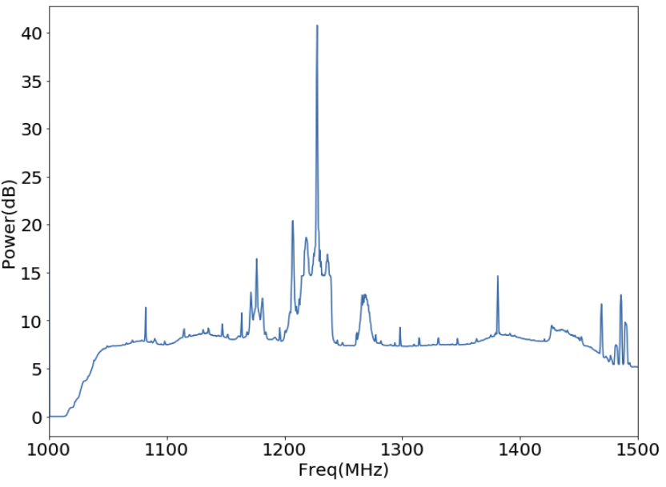
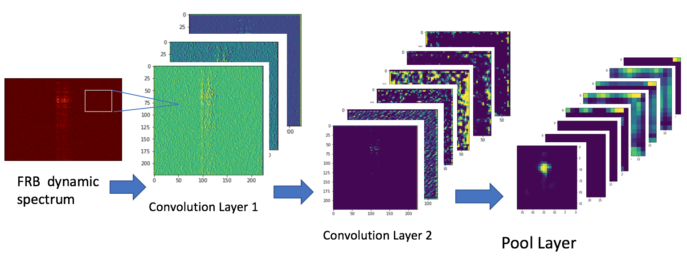

My research interests cover the aspects as follows
Fast Radio Bursts
Fast Radio Bursts (FRBs) are a type of short-duration radio transients. These radio flashes last for only a few milliseconds (even tens of microseconds), and exhibit dispersive signatures with prominent flux densities. As a quite new astronomical phenomenon, FRBs have been drawing people’s attentions since 2007, when the first FRB (Lorimer Burst) was discovered serendipitously from the Parkes Pulsar Survey for Small Magellanic Cloud.

Up to now, the true nature of FRBs is still an mystery. The possible origins have been detabed intensively. New facilities with large field of view and high sensitivity have commenced observations, FRB astronomy has come to an epoch of large sample. We are hopeful to unveil the mysteries in the near future.

Pulsars
Pulsars are highly magnetized spinning compact stars (mainly neutron stars, rarely white dwarfs) that can emit beamed electromagnetic radiation. We would expect to observe periodic arrival pulses emitted from a pulsar like lighthouse sweeping.

Owing to the high precision of pulse arrival time measurments, millisecond pulsars (MSPs) in binaries are widely used to test the gravity theories like General Relativity. In addition, long-term timing by monitoring dozens of MSPs at different positions is a unique approach to detect nano-hertz gravitational waves from the distant universe, i.e. Pulsar Timing Array (PTA).

RFI
It’s inevitable for radio astronomers to deal with a variety of radio frequency interference (RFI). Since the electromagnetic environment is becoming worse and worse around the world, RFI mitigation is becoming, to some extent, the future of radio astronomy.

Deep Learning
In recent years, a growing number of machine learning techniques have been applied in the data science of astronomy. For time-domain radio data sets, convolutional neural network (CNN) is playing a more and more important role in data reduction and candidates selection.
